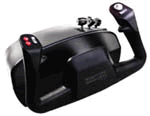

CH
Flight Sim Yoke PC
von Ulrich Löhl
Mit diesem Testergebnis bin ich eigentlich gar nicht
zufrieden, aber Tatsache bleibt Tatsache. Ich werde also
in diesem Sinne sachlich bleiben und auch kein
abschließendes Urteil fällen. Dieses Urteil zum Produkt
soll bitteschön jeder Simmer für sich selbst finden.
Der Inhalt des Kartons enthielt eine CD, ein gefaltetes
DIN-A4-Blatt als Installationsanweisung, die
Kunststoffhalter, und letztendlich den CH Joystick.
Bei näherer Betrachtung stellte ich fest, dass der
Joystick in der Schiebefunktion hängen blieb und dass er
nicht von alleine in die Nullstellung zurückging. Die
Drehbewegung funktionierte dagegen einwandfrei.
Somit packte ich ihn gleich wieder ein, um mir einen neuen
CH zukommen zu lassen.
 Als
dieser dann eintraf, hatte er die gleichen Mängel.
Als
dieser dann eintraf, hatte er die gleichen Mängel.
Das Produkt ist gänzlich aus schwarzem Kunststoff
gefertigt, ein angenehmes Griffgefühl stellt sich
hierdurch nicht ein. Fettige Finger sollte man nicht
haben, es wird sonst zu einer schmierigen Angelegenheit.
Die Knöpfe für die linke Hand sind gut zugänglich
und bedürfen keiner Verrenkung der Fingerglieder. Auf der
rechten Seite muß man allerdings die Handstellung
verändern, um mit dem Daumen an die Wippe oder das Coolie
Hat zu gelangen.....na ja, vielleicht sind meine Finger
auch zu lang ...
Es gibt nur ein Trimmrad an der Gehäusevorderseite.
Die Halter sind ebenfalls aus Kunststoff und relativ kurz,
diese werden von unten in den Joystick eingeschraubt.
Allerdings konnte ich dieses Produkt nur mit
Unterlegeplatten am Schreibtisch befestigen, da sich die
Halter nicht weit genug anziehen lassen.
 Bei
einer Tischplatte, die weniger als 2,5 cm in der Stärke misst,
müssen irgendwelche Holzkeile untergelegt werden,
ansonsten bekommt man ihn nicht am Tisch befestigt.
Bei
einer Tischplatte, die weniger als 2,5 cm in der Stärke misst,
müssen irgendwelche Holzkeile untergelegt werden,
ansonsten bekommt man ihn nicht am Tisch befestigt.
Auf den Tisch kann man ihn auch nicht stellen, da das
Kunststoffrohr des Griffes ansonsten auf die Tischplatte
stößt. Auch würde man den Joystick nur hin und her
schieben ... Er muss also irgendwie befestigt werden.
Nachdem ich das nun mit Trickserei bewerkstelligt
hatte, stellte ich wiederum fest, das sich das ganze
Gehäuse mitbewegt, wenn man den Griff nach vorn oder
hinten schiebt.


Die Halter vermittelten mir das Gefühl ... gleich
abzubrechen!
Ok, kommen wir zur Installation:
 Das
Heft, nein, ich meine das Blättchen mit der
Installationsanweisung war in meiner Verpackung nur in
Englisch, also nichts für nur der deutschen Sprache
Mächtige. Hierin wird nur auf die Installation unter
Windows und im DOS-Modus sowie auf ein paar allgemeine
Fehlermeldungen eingegangen. Die Anweisung enthält nichts
über die Kompatibilität mit anderen Produkten, nichts
über die Konfiguration im einzelnen, nichts über die
Schalterbelegung oder deren eventueller Problemlösung.
Das
Heft, nein, ich meine das Blättchen mit der
Installationsanweisung war in meiner Verpackung nur in
Englisch, also nichts für nur der deutschen Sprache
Mächtige. Hierin wird nur auf die Installation unter
Windows und im DOS-Modus sowie auf ein paar allgemeine
Fehlermeldungen eingegangen. Die Anweisung enthält nichts
über die Kompatibilität mit anderen Produkten, nichts
über die Konfiguration im einzelnen, nichts über die
Schalterbelegung oder deren eventueller Problemlösung.
Nach dem Autostart - sofern man Ihn denn eingeschaltet
hat - öffnet sich ein altes Windows3.1-Fenster, dort
klickt man auf Setup.
Eine Auswahlmöglichkeit für Laufwerke oder
Verzeichnisse besteht nicht, es wird alles nach
C:\Windows\... etc. kopiert und installiert. Fertig aus!
Im Programmordner findet man dann unter "CH
Products" die einzelnen Test- und
Konfigurationsprogramme, einmal für DOS und einmal für
Windows. Das Installationsprogramm erkennt aber
wenigstens, ob es sich um Windows 95 oder 98 handelt.
Das Windows-Testprogramm sieht dann folgendermaßen
aus:

Nicht sehr berauschend, wie ich finde. Hier stellte ich
fest, daß die Schalter nicht alle funktionieren.
Als nächstes kalibrierte ich den Joystick, dies
brachte aber für die Schalterfunktionen keinen Erfolg.
Somit hatte ich einen Joystick, bei dem nicht alle
Schalter funktionieren. Ich habe nach erfolgloser Suche
über eine Hilfedatei oder etwas ähnliches dann
aufgegeben.
Unter DOS öffnet sich ebenfalls ein Fenster, dort kann
der Joystick ebenfalls getestet und kalibriert werden,
aber auch hier keine Schalterfunktionen. Das Coolie Hat
funktionierte aber wenigstens.

Beim Schließen des DOS-Fenster erscheint eine
Fehlermeldung, daß alle gespeicherten Daten verloren
gehen. Tja, wenn das wahr sein sollte, hat man hier
umsonst justiert und getestet. Aber wahrscheinlich muß
das Programm aus der DOS-Ebene gestartet werden.
Ich habe das nicht weiter verfolgt, da ich keine
DOS-Spiele auf meinem Windows98-Rechner anwende.
Besser ist es auf jeden Fall, den Joystick über das
Setup-Programm der Windows-Einstellungen zu testen und zu
kalibrieren, dort kann man genau sehen ob etwas
funktioniert oder nicht, zudem ist es auch einfacher zu
handhaben.
Auf der CD befinden sich dann noch jede Menge
Demo-Programme. Aber nichts wirklich Neues.
Ok, dann zum FS98:
Hier entpuppte sich der Joystick als überempfindlich,
kleine Steuerbewegungen bewirken im FS Steig- oder
Sinkraten, die schon unheimlich werden. Das gleiche trifft
auch für die Kurvenlage zu. Für Kunstflug mag dieses
Verhalten von Vorteil sein, aber für Jets nicht mehr. Man
kann dann die Empfindlichkeit im FS etwas reduzieren, aber
auch hier bringt das nicht viel Besserung. Zudem muss man
auch ständig den Nullpunkt korrigieren, weil der Stick
nicht von alleine in die Nullstellung zurückgeht.
Schauen wir uns das Innenleben doch einmal genauer an:

Auch hier gilt: "Die Welt besteht aus
Kunststoff", abgesehen von den Zugfedern.

Aber es sind nur zwei Zugfedern, diese sollen
gleichzeitig für die Dreh- und die Schiebebewegung
zuständig sein, was zur Folge hat, daß auf die
Schiebemechanik fast keine Federkraft ausgeübt wird. Hier
sollte man doch besser noch zwei Federn für je einen
Groschen hinzufügen um die Schiebefunktion in bezug auf
den Nullpunkt zu unterstützen.

Der nächste Schwachpunkt ist die Übertragung der
Schiebefunktion auf das Stellpoti mittels eines
Kunststoffhebels. An diesem Hebelchen ist eine
Kunststoffnase, die nur 1 bis 2 mm in den Mitnehmer-Ring
hineinragt. Ich denke, es ist nur eine Frage der Zeit,
wann dieser Pin abreißt oder verschlissen ist.
Die Stellpotis sind nicht geschraubt, sondern alle nur
gesteckt, was logischerweise zu übermäßigem
Spiel bei der Übertragung der Mechanik zur
Elektronik führt.
Die Kunststoffteile sind fast alle mit Gussgraten
behaftet, die zum Klemmen in der Mechanik führen. Ich
habe das alles überarbeitet und nachgefettet, dadurch
konnte ich die Mechanik etwas leichtgängiger machen. Aber
den Nullpunkt erreicht man damit auch nicht, es fehlen
einfach die zusätzlichen Federn. Die Lagerungen des
Kunststoffrohres fügen einen weiteren Schwergang hinzu.
Garantie? Die erstreckt sich auf 3 Jahre ...
Hoffentlich ist das kein Eigentor!
Verbesserungsvorschläge meinerseits:
Zwei weitere Zugfedern für die Schiebemechanik. Die
Lagerringe des Kunststoffrohres mit Kugelkäfigen
ausrüsten (gibt es schon ab 2,50 DM/Stk.), man braucht ja
nur zwei.
Den Hebel für die Übertragung mit einem Metallstift
oder einer Kugel-Pfanne-Verbindung ausstatten. Die
Stellpotis festschrauben und nicht stecken. Und bitte alle
Spritzgussgrate an den Kunststoffteilen entfernen. Die
Griffe gummieren. Für den rechten Griff die Wippe auf die
Seite des oberen Griffteils platzieren (daumengerecht!).
Ein zweites Trimmrad hinzufügen.
Die CD ist unnötig, eine Installationsdiskette reicht
völlig aus. Die Testprogramme sind ebenfalls
überflüssig, da reicht das hauseigene Windows-Programm
völlig aus. Und bitte nochmal checken, warum die Schalter
sich nicht konfigurieren lassen. Das Blättchen
austauschen gegen eine komplette und detaillierte
Installationsanweisung und Hinweise zum Troubleshooting
und das ganze vor nicht nur in englisch (nobody is perfect!)
So, jetzt kann sich jeder sein eigenes Urteil bilden.
Ich jedenfalls würde bei dem Vorgängermodell bleiben,
das läuft mindestens 5 Jahre ohne Probleme.
Ich habe versucht, soweit wie möglich sachlich zu
bleiben, was mir vielleicht nicht ganz gelungen ist. Aber
mit ein bisschen Humor geht halt alles besser ... Und
vielleicht hält es CH ja wie Ford ... "Die tun
was."
Mit freundlichen Gruß
Euer Ulrich Löhl
fsuser@gmx.net
30.Oktober 1999


{kind=link}